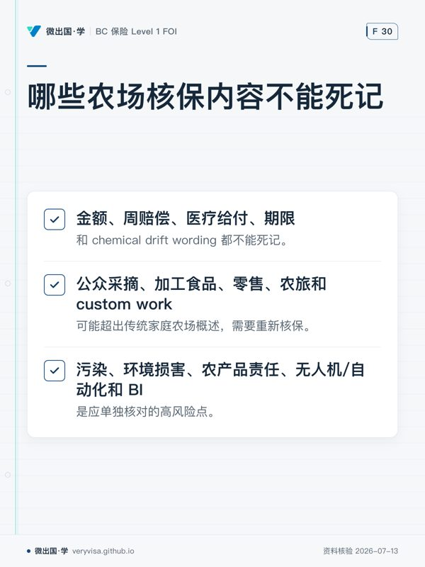

温习目标
- 将住家、农场财产、农机、牲畜/作物、farm liability、custom work、雇员风险分开建图。
- 以实际经营而非“农场”标签判断产品责任、公众进入、污染和业务中断暴露。
温习卡
| 风险域 | 调查问题 |
|---|---|
| 经营模式 | crop、livestock、加工、零售、agritourism、custom farming 各占多大比重？ |
| 人员 | owner、family、farm employee、residence employee、volunteer、contractor 分别是谁？ |
| 财产 | 住家、建筑、设备、车辆、牲畜、存货、作物在哪里，谁拥有？ |
| 责任 | 公众进入、产品、动物、化学品、无人机、合同作业和污染暴露是什么？ |
| 连续经营 | 关键季节、供应商、加工设备、冷藏、替代地点和恢复计划是什么？ |
2026 易错边界
- farm form 的金额、周赔偿、医疗给付、期限和 chemical drift wording 都不能死记。
- 公众采摘、加工食品、零售、农旅和 custom work 可能超出传统家庭农场概述，需要重新核保。
- 污染、环境损害、农产品责任、无人机/自动化和 BI 是应单独核对的高风险点。
闭卷自测
- 农场允许公众采摘并销售加工食品。为何 home/farm liability 的传统概述不足？
- 邻地称农药漂移造成损失。列出至少六项核保或索赔核查事项。
- 为什么必须区分 farm employee、volunteer、contractor？
- 某冷藏设备停机导致农产品报废。除设备损坏外，还应问哪些财产/中断问题？
- 为一个开展 custom farming 的农场写出一段风险发现问题清单。
参考答案与判分点
- 因经营已包含 premises/public access、products/food safety、加工/零售和商业收入等暴露；需要确认实际 operations、limits、endorsements、监管/合同和责任保单结构。
- 施用物质、日期/地点/方式、风向天气、记录与许可、受损作物/财产、污染/chemical drift wording、通知时限、证据保全、专家意见和责任事实。
- 因身份影响雇主责任、workers’ compensation、志愿者/承包商责任、工资和谁控制工作方式；不可用“在农场工作的人”概括。
- 冷藏设备是否在保障定义内、货物/作物损失、污染/腐败、BI/extra expense、等待期、温度记录、替代冷藏和供应链影响。
- 包括：为谁作业、在哪里作业、设备与操作员、收费合同、化学品/漂移、客户财产、雇员/承包商、车辆移动、事故记录及所需 endorsement。
错题记录
| 日期 | 题号 | 漏掉的经营活动/风险主体 | 下次触发问题 |
|---|---|---|---|
| “这还是传统农场，还是已经有独立商业暴露？” |
本页知识卡
不看正文也能拿到这一节的核心内容：先看导读，再看图。点图放大，左右翻页。
- 先看先横看五行，确认调查不是只围着财产展开。
- 易漏同一经营主体可能同时涉及加工、零售、公众进入或合同作业，核保范围会随经营内容变化。
- 下一步去练习，检验自己能否按风险域逐项追问。

- 先看先看哪些项目不能直接套用旧记忆，再看哪些活动会触发重审。
- 易漏传统家庭农场的概述不能自动覆盖新增经营活动；高风险点还要单独核对。
- 下一步去练习，遇到具体农场先判断哪些内容要重新核保。
本站依据官方原文自撰